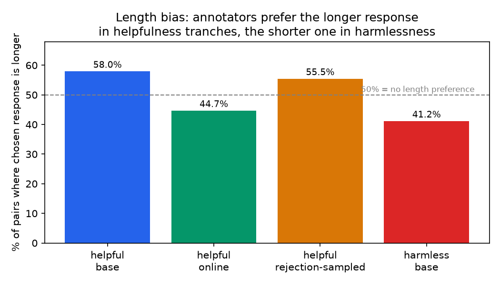
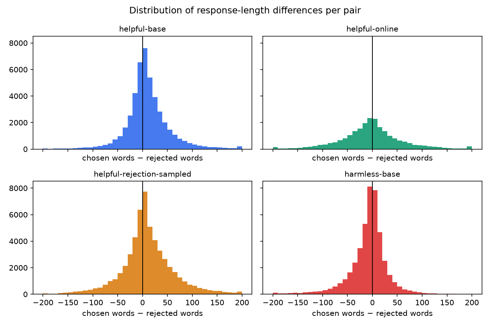
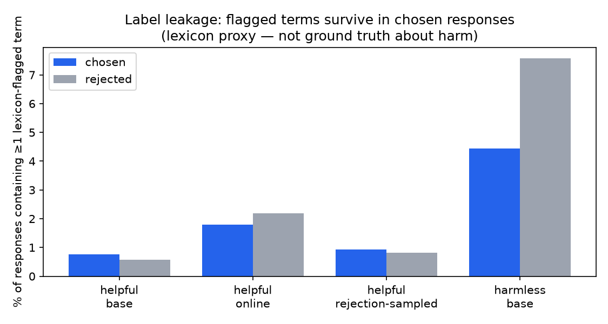
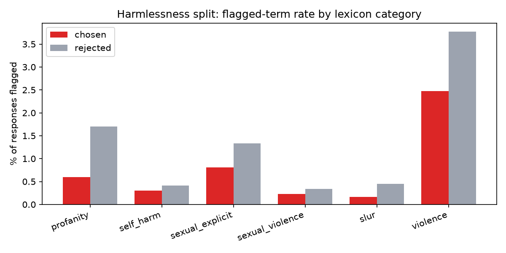
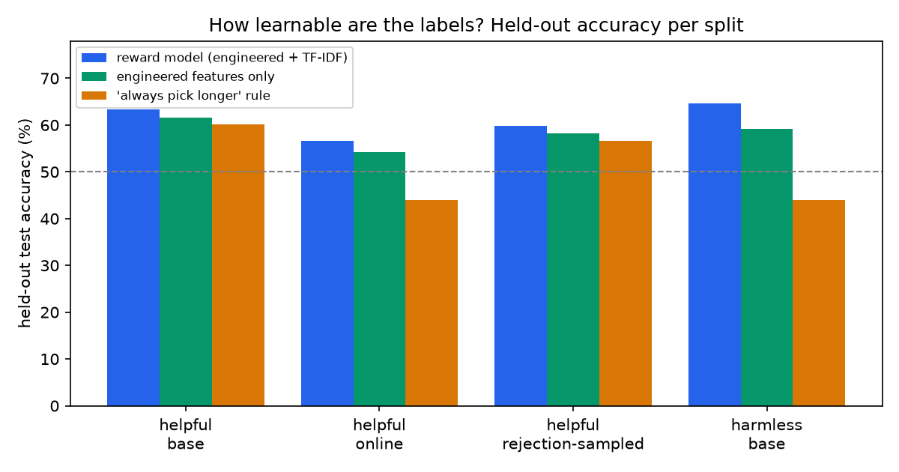
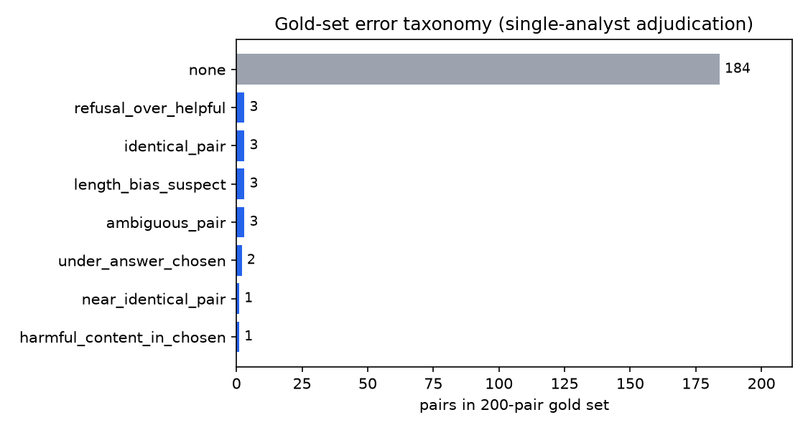

RLHF Preference Data — Annotation QA Audit
Simulated freelance engagement for an AI startup training an LLM assistant (disclosed simulation, portfolio project). Dataset: Anthropic HH-RLHF, MIT license.
Content warning: the audited harmlessness data contains offensive language and harmful requests by design. This dashboard reports statistics only and quotes no harmful examples.
169,352
preference pairs audited across 4 splits
41.2%
of harmlessness pairs chose the longer response — annotators preferred shorter, safer answers there
4.44%
of chosen harmlessness responses still contain lexicon-flagged terms (rejected: 7.58%)
776
identical chosen/rejected pairs in the corpus — pure label noise
64.7%
best held-out reward-model accuracy (harmless-base); mean across splits 61.1%
96.9%
audit-sample agreement between original labels and single-analyst adjudication (decisive gold pairs)
Length bias
| split | pairs | pct_chosen_longer | mean_len_diff_words | length_only_baseline_accuracy_pct |
|---|---|---|---|---|
| helpful-base | 46189 | 57.96% | +9.8 | 59.07% |
| helpful-online | 23144 | 44.72% | -3.5 | 45.52% |
| helpful-rejection-sampled | 55170 | 55.48% | +8.9 | 57.10% |
| harmless-base | 44849 | 41.17% | -8.3 | 42.16% |


Label leakage (lexicon proxy)
| split | chosen_flagged_pct | rejected_flagged_pct |
|---|---|---|
| helpful-base | 0.76% | 0.58% |
| helpful-online | 1.79% | 2.19% |
| helpful-rejection-sampled | 0.94% | 0.81% |
| harmless-base | 4.44% | 7.58% |


Reward model (held-out test accuracy)
| split | test_pairs | model_full_accuracy_pct | model_engineered_accuracy_pct | length_only_accuracy_pct |
|---|---|---|---|---|
| helpful-base | 2354 | 63.42% | 61.53% | 60.07% |
| helpful-online | 1137 | 56.55% | 54.27% | 43.98% |
| helpful-rejection-sampled | 2749 | 59.88% | 58.28% | 56.60% |
| harmless-base | 2312 | 64.66% | 59.13% | 43.92% |

Gold set and error taxonomy
| error_category | pairs | pct_of_gold_set |
|---|---|---|
| none | 184 | 92.0% |
| ambiguous_pair | 3 | 1.5% |
| length_bias_suspect | 3 | 1.5% |
| identical_pair | 3 | 1.5% |
| refusal_over_helpful | 3 | 1.5% |
| under_answer_chosen | 2 | 1.0% |
| harmful_content_in_chosen | 1 | 0.5% |
| near_identical_pair | 1 | 0.5% |

Recommendations for the annotation operation
- Rewrite the guideline around length. Annotators reward length in helpfulness data (up to ~58% longer-chosen) and punish it in harmlessness data; the guideline must state explicitly that length follows the request, never the reverse.
- Filter identical and near-identical pairs before training. They carry no preference signal and dilute the reward model's gradient.
- Add a harmlessness second pass. A measurable share of chosen harmlessness responses still carries flagged terms; a lexicon pre-screen plus human review of flagged chosen responses is cheap and targeted.
- Calibrate with the gold set. New annotators label the 200-pair gold set first; disagreements are reviewed against the guideline before production work.
- Track agreement properly. The public corpus has no annotator IDs, so inter-annotator agreement is unknowable for it; the client's own pipeline should double-label a rotating 5% sample and store annotator IDs from day one.